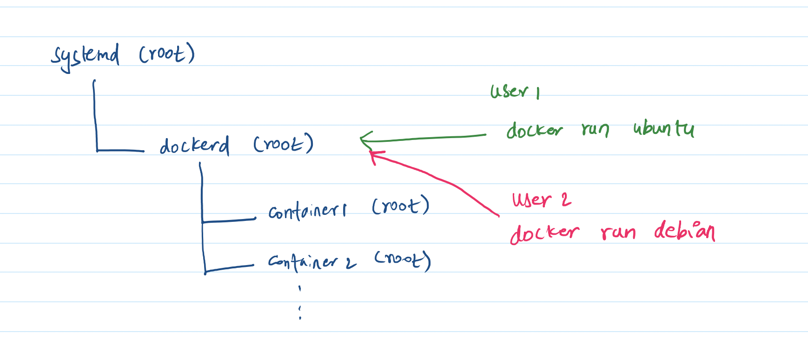
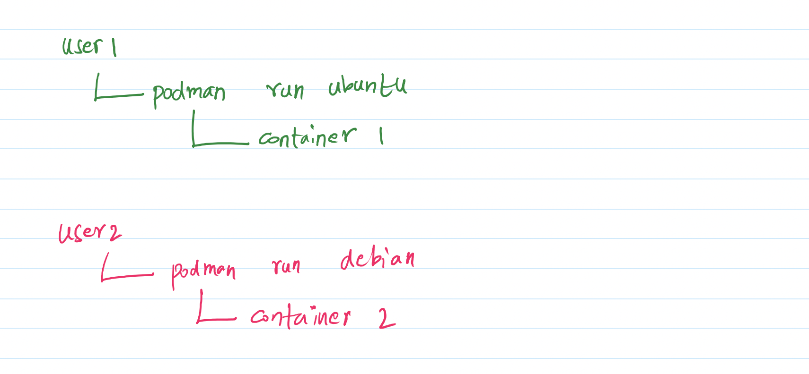

Security: Docker, Podman and Rootless Containers¶
Author: Sasank Chilamkurthy
In my previous post about security, I have written about sudo, virtualization and containerization. I explained how containers have become the modern way of deploying applications because they are lightweight. In this post, I will dig more into flavours of containers with a focus on security. Let’s dive into it!
Docker¶
OS level virtualization or containers have existed since forever. Linux specifically had features like chroot and namespaces from around 2006. However these features are quite low level and were painful to use. Enter Docker Inc. in 2013. They made containers really easy to use. They had particularly high focus on developer experience. This made Docker synonymous with containers.
The main issue Docker solved was “works on my machine” problem. You see every software depends on other (mostly open source) software packages to work correctly. These packages are called dependencies. Developers are so tied to their dependencies even a small version match in them breaks their software. Bugs due to dependency mismatches are notoriously hard to find.

Docker allowed developers to create an Image which packaged all dependencies of their software into one big tar file. Specifically, all userspace dependencies of an operating system are shipped inside this image. This includes low-level tools like linker (ld), C library (glibc). Thus, building an Image is an extreme version of static linking in compilers. What is not included in the image file is kernel which is shared with the host system.
This whole system simplified developer’s workflow significantly. Developers could maintain a ‘single truth’ of their application allowing easier collaboration among themselves. They could set up automatic runners (called continuous integration) to test their docker image file before deployment. They could deploy an application easily anywhere whether in cloud or edge.
Docker is Insecure¶
Because I love Docker so much, it pained me a lot to learn that it is not secure. The reason for this requires us to understand the architecture of Docker and a bit more about Linux. Let’s start with Linux.
In Linux (and many other operating system), processes form a tree. A process can create another child process. This child process can create yet another child process and so on. Child process inherits the permissions of parent. When Linux boots up, the first process it starts matters a lot. This process is called init system and every other process is a child of it. The most popular init system out there is called systemd.
Init system is run as a root user – yes, the same user that is the bane of security. It decides which processes to spawn and which process to kill. An important class of process it manages is called daemons. Daemons are background process that run to provide services like login/SSH/FTP etc. Turns out Docker also runs as a daemon spawned by init process and inherits root permissions!
When a user runs a command like docker run ubuntu, they are merely communicating with the Docker daemon and asking it to create a container with ubuntu. Thus the users themselves do not create the container but the docker daemon with root permissions does. Therefore, the container also runs as root. This is illustrated in the below diagram. Thus, a user who can run docker can masquerade as root - a big no no!

This has had real consequences for JOHNAIC. When I gave a user docker permissions, they managed to crash my drivers! Another consequence of daemon based containers is that one user can inadvertently kill another user’s containers. This obviously goes against my operational definition of security. Docker permission becomes the same as root permission. Very scary!
Podman and Rootless Containers¶
The architecture of docker is so against how things are done in Linux that Redhat decided to build their own secure version of docker. To recap, Redhat is one of the first companies that were able to commercialize Linux by offering Redhat Enterprise Linux (RHEL). Redhat wrote a container engine called podman which doesn’t have a daemon as in the above. It instead follows a standard fork/exec model.
Let me illustrate. When a user runs podman run ubuntu, they are literally spawning the container. There is no daemon that they are communicating to. Thus the container inherits the permissions of the user who runs the container. Thus the container is rootless. Because of this permissions, one user can not kill another user’s containers. Nor can they crash my drivers!

To make transition easy from docker, podman follows almost exact command line interface (CLI) as Docker. The options to run and manage containers are almost exactly same as Docker. There is one glaring issue though – lack of a good docker-compose alternative. This is because docker-compose is too tied to the daemon model of docker. Otherwise podman is better than docker.
Conclusion¶
In this post, we have understood the problem of ‘works on my machine’ and how it is solved by Docker. We saw how this simplified development and deployment of software for both the cloud and edge. We later understood the linux init system and daemons. We saw how Docker runs as a daemon and this permissions of containers as root. This creates glaring security issue where users can masquerade as root and kill other users’ processes. Podman is presented as a secure alternative with permission system that aligns with Linux.